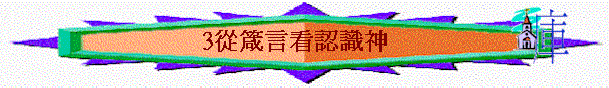

引言
「敬畏耶和華是智慧的開端；認識至聖者便是聰明。」箴9:10
～箴言除了多「智慧」字眼，「耶和華」、「至聖者」、「神」也充滿這卷書，人要得著真正的智慧，必須認識那位創天造地的至高神
一.箴言中的耶和華
1.耶和華的能力與主權
A.創造萬物
「耶和華以智慧立地，以聰明定天，」3:19
「能聽的耳，能看的眼，都是耶和華所造的。」20:12
B.鑒察人心
「陰間和滅亡尚在耶和華眼前，何況世人的心呢？」15:11
「人一切所行的，在自己眼中看為清潔；惟有耶和華衡量人心。」16:2
「鼎為煉銀，爐為煉金；惟有耶和華熬煉人心。」17:3
C.定立事情
「籤放在懷裡，定事由耶和華。」16:33
「人心多有計謀；惟有耶和華的籌算才能立定。」19:21
D.隱秘事情
「將事隱秘乃神的榮耀；將事察清乃君王的榮耀。」25:2
E.指引人路
「人心籌算自己的道路；惟耶和華指引他的腳步。」16:9
F.掌管人心
「王的心在耶和華手中，好像隴溝的水隨意流轉。」21:1
G.得勝源頭
「沒有人能以智慧、聰明、謀略敵擋耶和華。馬是為打仗之日預備的；得勝乃在乎耶和華。」21:30-31
2.耶和華所喜悅人的事
A.公平法碼
「詭詐的天平為耶和華所憎惡；公平的法碼為他所喜悅。」11:1
B.行事完全
「心中乖僻的，為耶和華所憎惡；行事完全的，為他所喜悅。」11:20
C.行事誠實
「說謊言的嘴為耶和華所憎惡；行事誠實的，為他所喜悅。」12:22
D.追求公義
「惡人的道路，為耶和華所憎惡；追求公義的，為他所喜愛。」15:9
3.耶和華所憎惡的事情
A.乖僻的人
「因為，乖僻人為耶和華所憎惡；正直人為他所親密。」3:32
B.七樣事情
「耶和華所恨惡的有六樣，連他心所憎惡的共有七樣：就是高傲的眼，撒謊的舌，流無辜人血的手，圖謀惡計的心，飛跑行惡的腳，吐謊言的假見證，並弟兄中布散分爭的人。」6:16-19
C.邪惡的事
「敬畏耶和華在乎恨惡邪惡；那驕傲、狂妄，並惡道，以及乖謬的口，都為我所恨惡。」8:13
D.詭詐天平
「詭詐的天平為耶和華所憎惡；公平的法碼為他所喜悅。」11:1
「能聽的耳，能看的眼，都是耶和華所造的。」20:12
E.惡人計謀
「惡謀為耶和華所憎惡；良言乃為純淨。」15:26
F.淫婦的口
「淫婦的口為深坑；耶和華所憎惡的，必陷在其中。」22:14
G.不公判決
「定惡人為義的，定義人為惡的，這都為耶和華所憎惡。」17:15
4.耶和華所賜人的福氣
A.不使義人受飢餓
「耶和華不使義人受飢餓；惡人所欲的，他必推開。」10:3
B.使人富足不加憂慮
「耶和華所賜的福使人富足，並不加上憂慮。」10:22
C.使義人與仇敵和好
「螞蟻沒有元帥，沒有官長，沒有君王，」16:7
D.聽義人的禱告
「耶和華遠離惡人．卻聽義人的禱告。」15:29
E.使人得著賢妻
「房屋錢財是祖宗所遺留的；惟有賢慧的妻是耶和華所賜的。」19:14
5.耶和華的管教與審判
A.咒詛惡人的家庭
「耶和華咒詛惡人的家庭，賜福與義人的居所。」3:33
B.拆毁驕傲人的家
「惡謀為耶和華所憎惡；良言乃為純淨。」15:26
C.遠離惡人
「耶和華遠離惡人，卻聽義人的禱告。」15:29
D.傾敗奸詐人的言語
「敬畏耶和華心存謙卑，就得富有、尊榮、生命為賞賜。」22:4
6.人對耶和華當有的回應
A.敬畏耶和華
「敬畏耶和華是知識的開端；愚妄人藐視智慧和訓誨。」1:7
B.認識至聖者
「敬畏耶和華是智慧的開端；認識至聖者便是聰明。」9:10
C.倚靠耶和華
「你要專心仰賴耶和華，不可倚靠自己的聰明，」3:5
「因為耶和華是你所倚靠的；他必保守你的腳不陷入網羅。」3:26
「你所做的，要交託耶和華，你所謀的，就必成立。」16:3
「我今日以此特特指教你，為要使你倚靠耶和華。」22:19
D.尋求耶和華
「壞人不明白公義；惟有尋求耶和華的，無不明白。」28:5
E.等候耶和華
「你不要說，我要以惡報惡；要等候耶和華，他必拯救你。」20:22
F.尊榮耶和華
「你要以財物和一切初熟的土產尊榮耶和華。」3:9
G.不輕看神管教
「我兒，你不可輕看耶和華的管教（或作：懲治），也不可厭煩他的責備；」3:11
H.不褻瀆神的名
「恐怕我飽足不認你，說：耶和華是誰呢？又恐怕我貧窮就偷竊，以致褻瀆我神的名。」30:9
二.箴言中的基督
「在耶和華造化的起頭，在太初創造萬物之先，就有了我。從亙古，從太初，未有世界以前，我已被立。沒有深淵，沒有大水的泉源，我已生出。」箴8:22-24
｢要叫他們的心得安慰、因愛心互相聯絡、以致豐豐足足在悟性中有充足的信心、使他們真知 神的奧秘、就是基督．所積蓄的一切智慧知識、都在他裡面藏著。｣西2:2-3
～不同解經家對箴8:22-31所提及的「我」有不同的解釋，有人說這「我」是講智慧，將智慧擬人法，描述神用祂的智慧創造天地，而另一些解經家卻說應是指向基督，從上下文及整卷書的內容而看，是指智慧，但若細看這「我」及用新約聖經作比較，此段經文也預表了基督，原因如下
1.「我」------在太初之先
「在耶和華造化的起頭，在太初創造萬物之先，就有了我。從亙古，從太初，未有世界以前，我已被立。」箴8:22-23
「太初有道，道與神同在，道就是神。」約1:1
2.「我」------與神同在
「他立高天，我在那裡；他在淵面的周圍，劃出圓圈。」箴8:27
「父啊，現在求你使我同你享榮耀，就是未有世界以先，我同你所有的榮耀。」約17:5
「（這生命已經顯現出來，我們也看見過，現在又作見證，將原與父同在、且顯現與我們那永遠的生命、傳給你們。）」約壹1:2
3.「我」----參與創造
「為滄海定出界限，使水不越過他的命令，立定大地的根基。那時，我在他那裡為工師，日日為他所喜愛，常常在他面前踴躍，」箴8:29-30
「愛子是那不能看見之神的像，是首生的，在一切被造的以先。因為萬有都是靠他造的，無論是天上的，地上的；能看見的，不能看見的；或是有位的，主治的，執政的，掌權的；一概都是藉著他造的，又是為他造的。」西1:15-16
4.「我」------與人同住
「踴躍在他為人預備可住之地，也喜悅住在世人之間。」箴8:31
「道成了肉身，住在我們中間，充充滿滿的有恩典有真理。我們也見過他的榮光，正是父獨生子的榮光。」約1:14
～從上文的經文來看，基督同樣是擁有神的智慧，祂也是創造天地，與父神同在，喜悅住在人中間，所以箴8:22-31所講的「我」也預表了基督
三.箴言中的敬畏神
1.敬畏神的重要
A.知識的開端
「敬畏耶和華是知識的開端；愚妄人藐視智慧和訓誨。」1:7
B.得認識真神
「你就明白敬畏耶和華，得以認識神。」2:5
C.得著滋潤
「這便醫治你的肚臍，滋潤你的百骨。」3:8
D.大有倚靠
「敬畏耶和華的，大有倚靠；他的兒女也有避難所。」14:26
E.得著豐富
「敬畏耶和華心存謙卑，就得富有、尊榮、生命為賞賜。」22:4
F.得以知足
「敬畏耶和華的，得著生命；他必恆久知足，不遭禍患。」19:23
G.日子增多
「敬畏耶和華使人日子加多；但惡人的年歲必被減少。」10:27
2.敬畏神的表現
A.遠離惡事
「不要自以為有智慧；要敬畏耶和華，遠離惡事。」3:7
「因憐憫誠實，罪孽得贖；敬畏耶和華的，遠離惡事。」16:6
B.恨惡邪惡
「敬畏耶和華在乎恨惡邪惡；那驕傲、狂妄，並惡道，以及乖謬的口，都為我所恨惡。」8:13
C.行動正直
「行動正直的，敬畏耶和華；行事乖僻的，卻藐視他。」14:2
D.憐憫窮人
「欺壓貧寒的，是辱沒造他的主；憐憫窮乏的，乃是尊敬主。」14:31
E.敬畏在上
「我兒，你要敬畏耶和華與君王，不要與反覆無常的人結交，」24:21
F.不妒罪人
「你心中不要嫉妒罪人，只要終日敬畏耶和華；」23:17